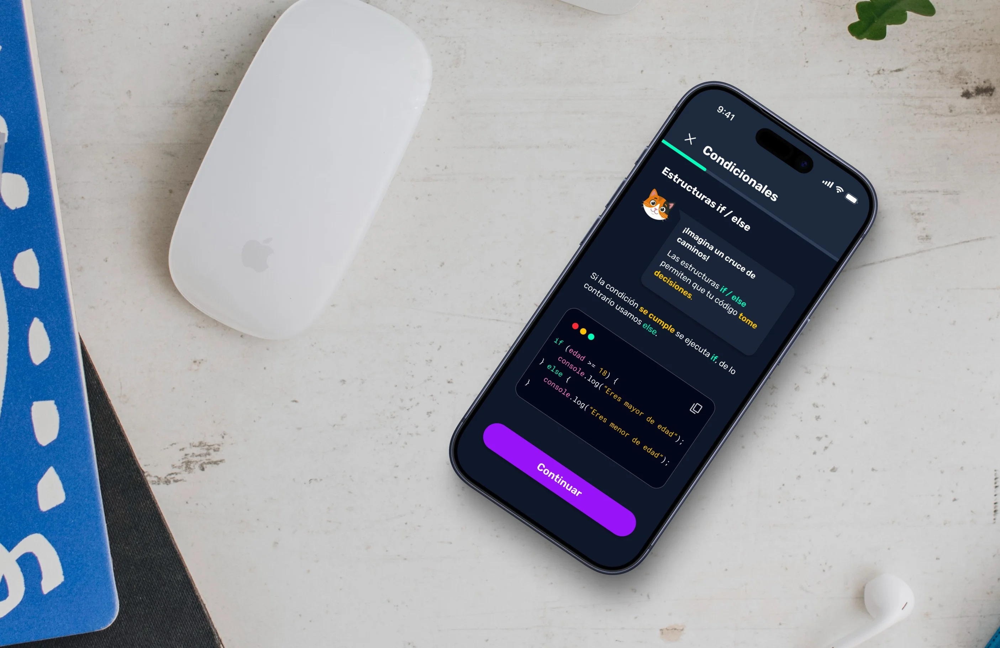
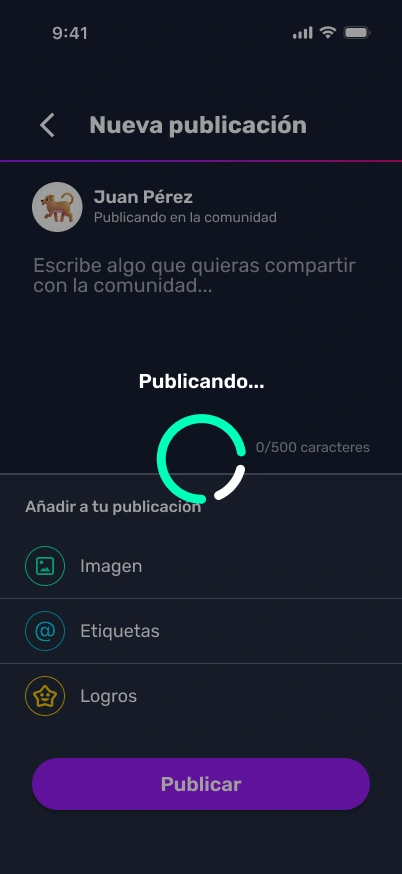
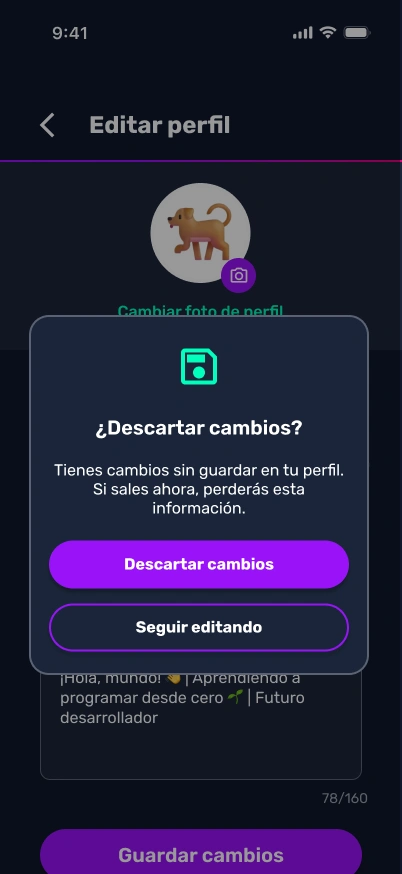
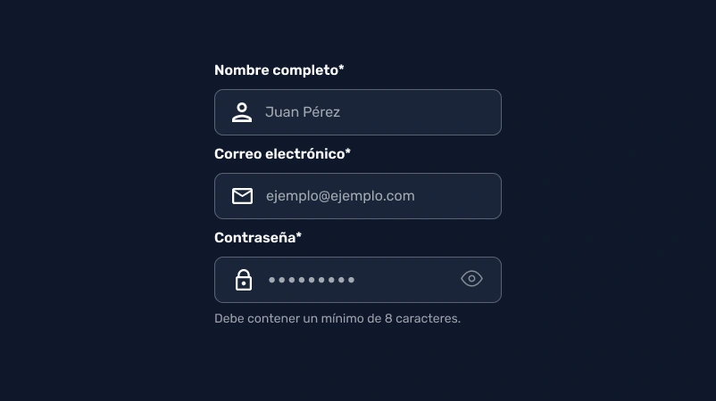

LearnCode
An educational application prototype designed to teach programming through courses, community interaction, and gamification elements like rankings and badges.

Role
UX Researcher & UI Designer
Project Goal
Design the information architecture and evaluate the usability of the LearnCode prototype to ensure an intuitive, engaging, and frictionless programming learning experience.
Target Audience
Software Engineering students and individuals interested in autonomous learning through gamified online courses.
Key Challenges & Constraints
The primary challenge was structuring an engaging, gamified learning experience while identifying usability friction points across core mobile application flows:
Evaluation Constraints: The research was conducted across four sequential stages: an ethnographic user journey evaluation with 10 Software Engineering students, a hybrid card sorting study with 10 participants, an unmoderated tree testing evaluation with 6 students, and a peer heuristic review conducted by 3 independent student evaluators.
Design Strategy
The research strategy focused on understanding user mental models, optimizing content hierarchy, and eliminating interaction barriers before finalizing designs.
Key Implementation Strategies
Information Architecture
- Mental Model Alignment: Categorizing features via Card Sorting.
- Findability Testing: Validating menu logic through Tree Testing.
- Clear Pathways: Streamlined navigation between courses and profile.
Gamification & Feedback
- Learning Streaks: Motivating daily autonomous practice.
- Community Sharing: Reinforcing engagement through peer posts.
- Reward Feedback: Visible badges and certifications.
Usability Standards
- System Status: Immediate feedback for critical user actions.
- Error Prevention: Safeguarding against accidental data loss.
- Consistency: Global navigation and standardized interactions.
Evaluation Conducted
The UX research and evaluation process was structured across four sequential methodology stages to iteratively refine the prototype:
Ethnographic & Usability Study
Initial qualitative and quantitative evaluation of the core user journey (from sign-up to certificate download) with 10 Software Engineering students. This stage helped identify baseline satisfaction and early UI friction points.
Card Sorting
To address navigation challenges identified in the initial study, a hybrid card sorting session was conducted with 10 participants. This revealed users' mental models, allowing us to establish a logical hierarchy based on four main categories: Home, Ranking, Community, and Profile.
Tree Testing
The proposed information architecture was empirically validated with 6 students using task-based scenarios (e.g., finding a certificate or checking daily streaks) to measure findability and structural logic without visual distractions.
Heuristic Evaluation
A peer review conducted by a team of three fellow students using Nielsen's 10 Usability Heuristics to identify and polish subtle interaction barriers and missing error prevention mechanisms.
Test Results & User Feedback
Across all four evaluation stages, participants demonstrated high engagement, awarding the prototype an overall satisfaction score of 9.3 / 10. However, empirical testing surfaced key structural ambiguities and interaction friction points:
Additional Usability Findings
- Missing Navigation Labels: In the initial study, bottom navigation icons lacked text labels, causing users to pause and guess panel destinations.
- Navigation Menu Disablement: The global navigation bar was hidden inside the course catalog, forcing users to repeatedly tap back instead of directly switching views.
- Authentication Friction: The registration form lacked real-time email format validation, and the password visibility toggle did not reveal the input text.
- False Affordances: Top-bar score counters were visually interpreted as clickable buttons rather than passive indicators.
- Leaderboard Sync: Registered user aliases were not immediately reflected on the leaderboard after completing tasks.
Positive User Feedback
Participants praised the vibrant visual styling, the motivating gamification structure (badges and streaks), and the clarity of interactive coding exercises, noting that the community feed fostered strong collaborative motivation.
Final Design & Improvements
Guided by user mental models from Card Sorting and usability validation across Tree Testing and Heuristic Reviews, we refined the LearnCode mobile prototype into an intuitive and structured learning ecosystem.
Based on the research findings, design iterations were grouped into three core enhancement pillars:
1. Information Architecture & Global Navigation
- Dual-Access Gamification: Placed the daily streak indicator prominently on the Home dashboard while cross-referencing it within Profile, resolving the findability conflict detected in Tree Testing.
- Persistent Global Navigation: Kept the bottom tab bar visible across the course catalog to eliminate dead ends and enable single-tap tab switching.
- Standardized 4-Pillar Menu: Adopted the Card Sorting hierarchy (Home, Ranking, Community, Profile) with explicit text labels under each icon.
2. System Status & Error Prevention
- Publishing Status & Feed Feedback: Added a circular loading spinner with a clear "Publishing..." status indicator during upload, smoothly transitioning to display the newly published post at the top of the community feed.
- Destructive Action Safeguards: Added modal confirmation dialogs when saving or discarding profile edits to prevent accidental data loss.
- Immediate Leaderboard Updates: Synchronized user alias and points to reflect instantly upon lesson completion.


3. Form Usability & Microinteractions
- Registration Validation: Added inline email format verification before submission.
- Interactive Password Reveal: Enabled dynamic toggle between masked and plain text for credential input.
- Clear Visual Affordance: Styled passive indicator chips distinctly from actionable buttons to prevent misclicks.

Conclusion
This project provided invaluable hands-on experience balancing gamified engagement with clear information architecture in a mobile learning environment.
Core Learning: High overall satisfaction ratings (such as our 9.3/10 baseline) can easily mask critical navigation barriers. While participants praised the vibrant aesthetic and interactive exercises, testing their real journeys revealed that users struggled to locate daily streaks and felt trapped within the course catalog. Combining findability data from Tree Testing with qualitative findings from Card Sorting and Heuristic Evaluation proved that visual polish cannot replace intuitive structure, highlighting the need to design directly around user mental models.
Ultimately, the project demonstrated that building engaging educational software requires looking beyond surface-level praise, transforming subtle user friction into a frictionless experience where learning feels natural and rewarding.